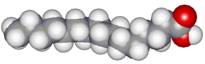
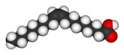

| nombre trivial | nombre IUPAC | |
|---|---|---|
| Ácido propiónico | Ácido propanoico | C3:0 |
| Ácido butírico | Ácido butanoico | C4:0 |
| Ácido valérico | Ácido pentanoico | C5:0 |
| Ácido caproico | Ácido hexanoico | C6:0 |
| Ácido enántico | Ácido heptanoico | C7:0 |
| Ácido caprílico | Ácido octanoico | C8:0 |
| Ácido pelargónico | Ácido nonanoico | C9:0 |
| Ácido cáprico | Ácido decanoico | C10:0 |
| Ácido láurico | Ácido dodecanoico | C12:0 |
| Ácido mirístico | Ácido tetradecanoico | C14:0 |
| Ácido palmítico | Ácido hexadecanoico | C16:0 |
| Ácido margárico | Ácido heptadecanoico | C17:0 |
| Ácido esteárico | Ácido octadecanoico | C18:0 |
| Ácido araquídico | Ácido eicosanoico | C20:0 |
| Ácido behénico | Ácido docosanoico | C22:0 |
| Ácido lignocérico | Ácido tetracosanoico | C24:0 |
| Ácido cerótico | Ácido hexacosanoico | C26:0 |
| Ácido montánico | Ácido octacosanoico | C28:0 |
| Ácido melísico | Ácido triacontanoico | C30:0 |
| Ácido laceroico | Ácido dotriacontanoico | C32:0 |
| Ácido gédico | Ácido tetratriacontanoico | C34:0 |
| Ácido ceroplástico | Ácido pentatriacontanoico | C35:0 |

| nombre trivial | Δx | C:D | ω−x |
|---|---|---|---|
| Ácido miristoleico | cis-Δ9 | C14:1 | ω−5 |
| Ácido palmitoleico | cis-Δ9 | C16:1 | ω−7 |
| Ácido sapiénico | cis-Δ6 | C16:1 | ω−10 |
| Ácido oleico | cis-Δ9 | C18:1 | ω−9 |
| Ácido linoleico | cis, | C18:2 | ω−6 |
| Ácido linoeláidico | trans, | C18:2 | ω−6 |
| Ácido α-Linolénico (ALA) | cis, | C18:3 | ω−3 |
| Ácido γ-Linolénico (GLA) | cis, | C18:3 | ω−6 |
| Ácido estearidónico (SDA) | cis, | C18:4 | ω−3 |
| Ácido punícico | cis, | C18:3 | ω−5 |
| Ácido eicosenoico | cis-Δ11 | C20:1 | ω−9 |
| Ácido araquidónico | cis, | C20:4 | ω−6 |
| Ácido eicosatetraenoico (ETA) | cis, | C20:4 | ω−3 |
| Ácido eicosapentaenoico (EPA) | cis, | C20:5 | ω−3 |
| Ácido docosapentaenoico (DPA) | cis, | C22:5 | ω−3 |
| Ácido docosahexaenoico (DHA) | cis, | C22:6 | ω−3 |
| Ácido nervónico | cis-Δ15 | C24:1 | ω−9 |
| Ácido tetracosapentaenoico | cis, | C24:5 | ω−3 |